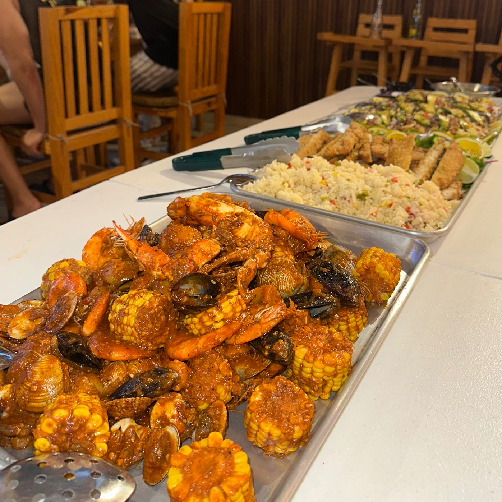
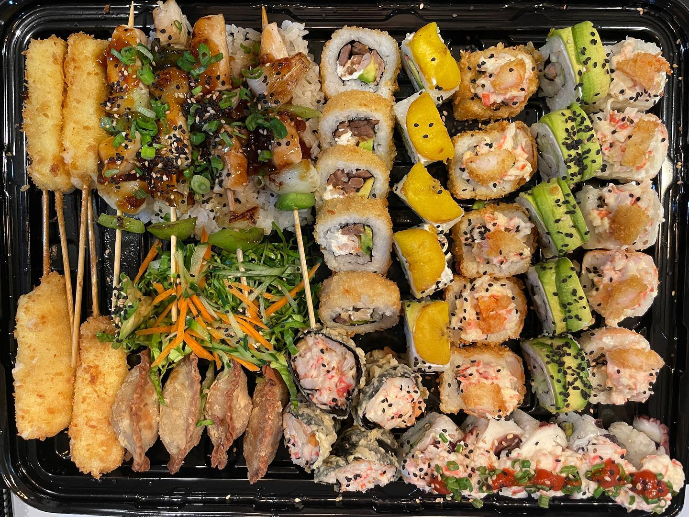
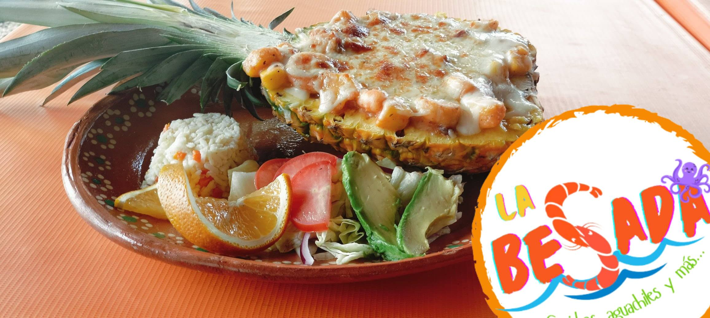
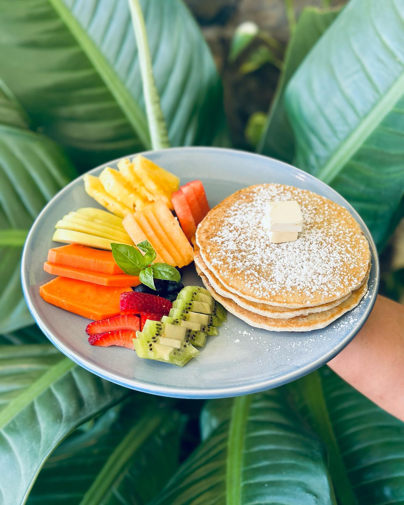
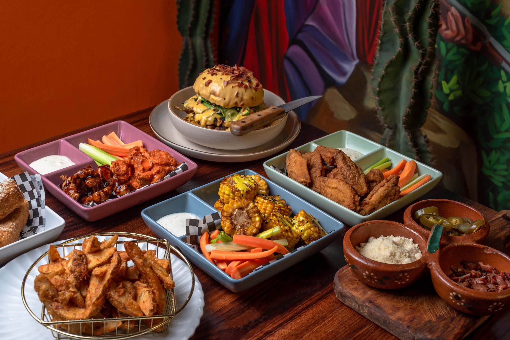
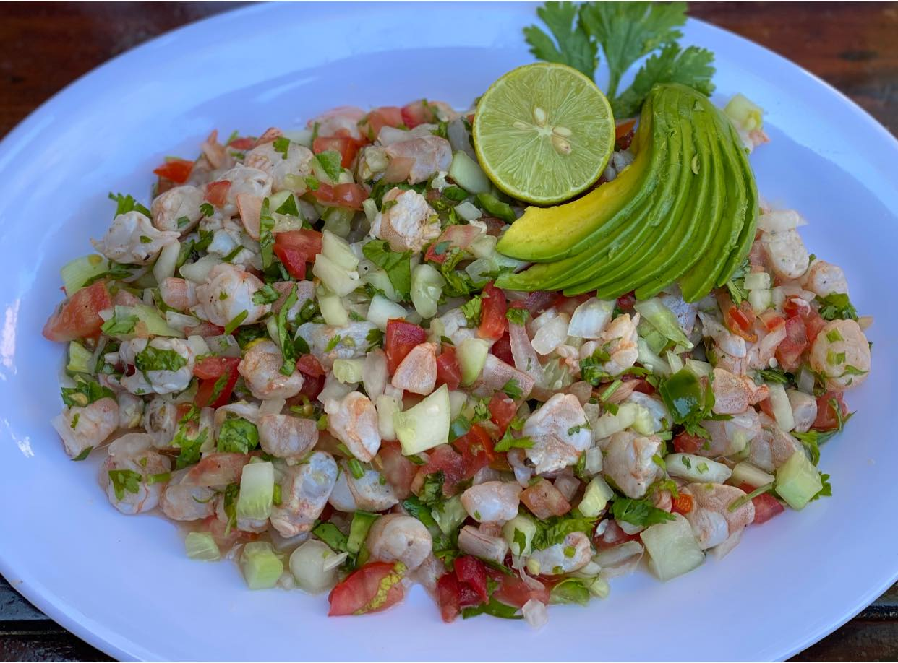
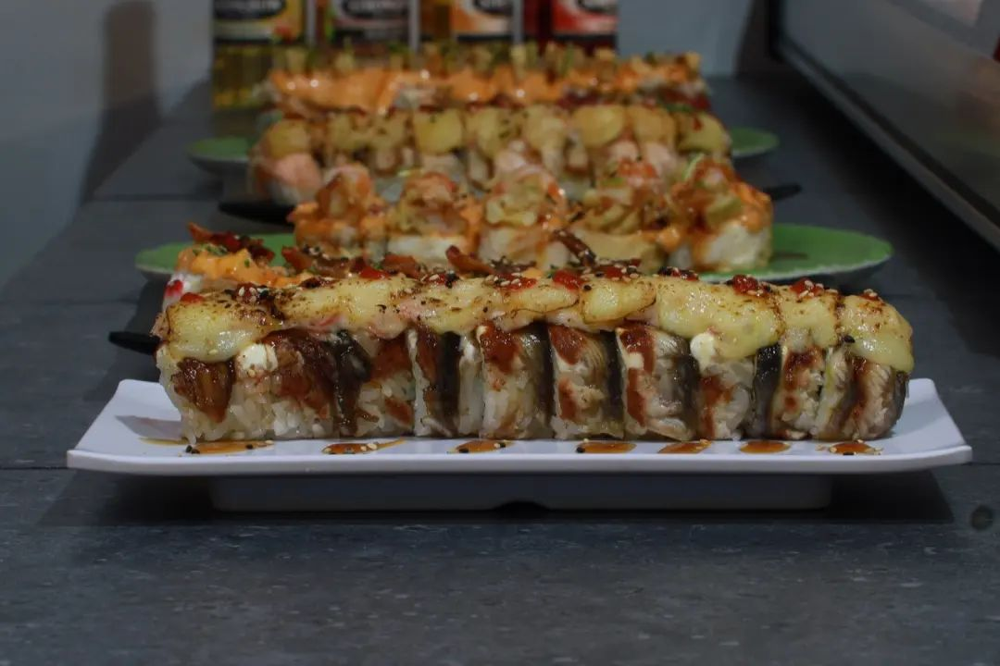
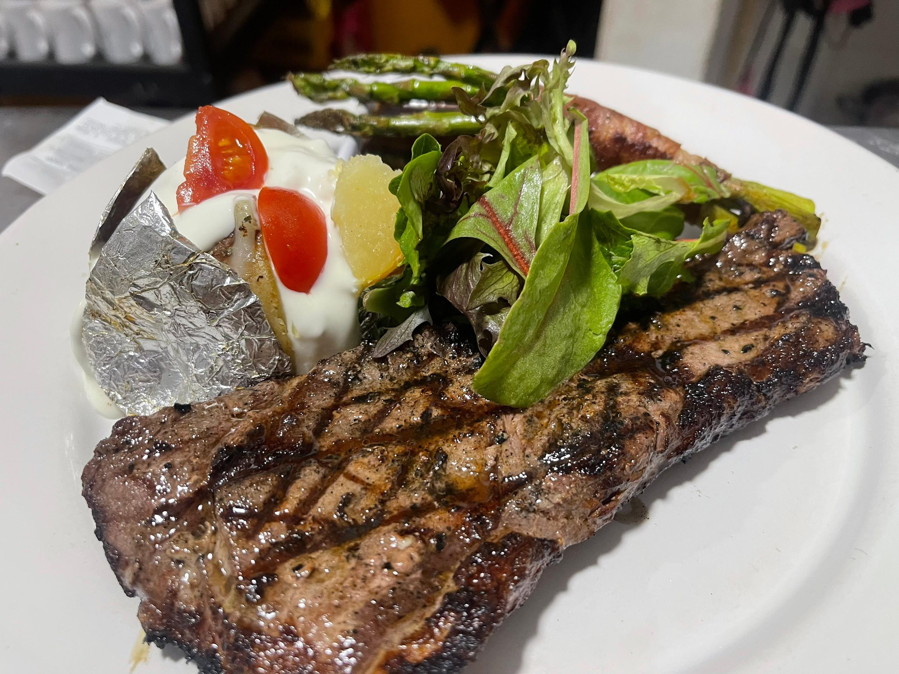
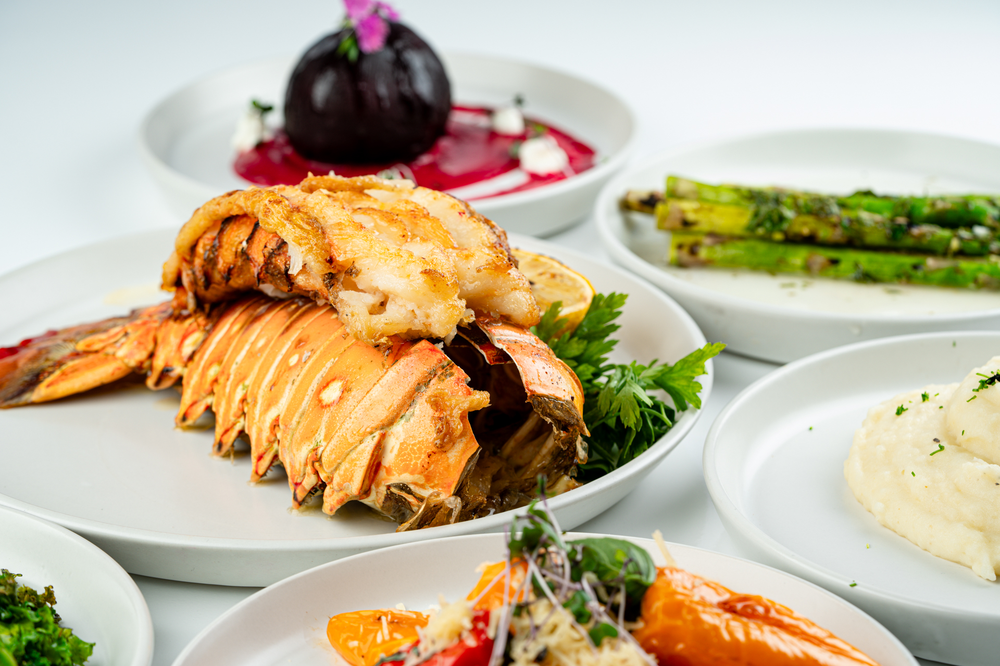
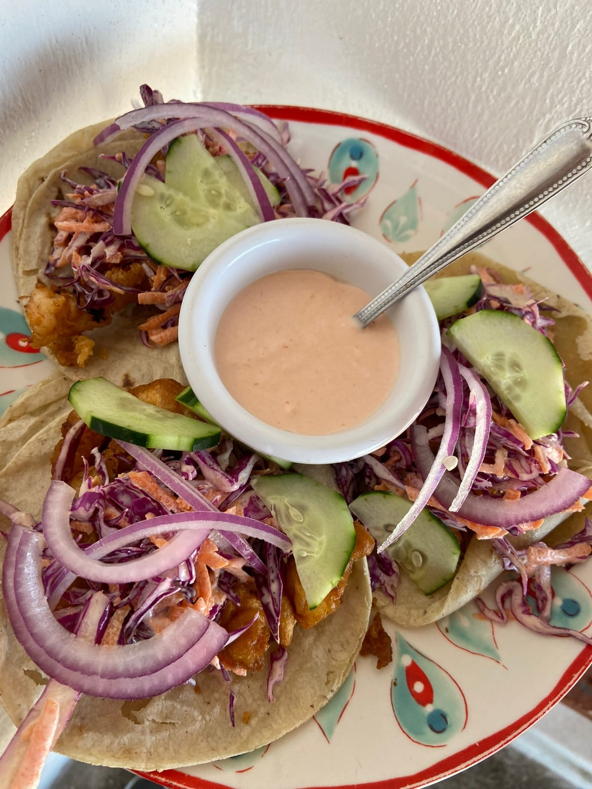

Rey Cajun
Restaurante especializado en mariscos al estilo cajún, con platillos de mariscos sazonados, camarones, pescados frescos y preparaciones inspiradas en sabores intensos y especiados.

Restaurante especializado en mariscos al estilo cajún, con platillos de mariscos sazonados, camarones, pescados frescos y preparaciones inspiradas en sabores intensos y especiados.

Restaurante con comida casera mexicana tradicional, conocido por sus desayunos y platos del día con sabor auténtico y ambiente familiar.

Clásico restaurante familiar de comida mexicana y grill, que conserva sabores típicos de la región desde hace décadas. Es conocido por su menú variado (desde desayunos hasta cenas), ambiente acogedor para familias y grupos.

Restaurante japonés con sushi y opciones de cocina asiática fusion. Opción elegante y distinta dentro de la oferta local.

Restaurante con enfoque en parrilladas y platillos a la brasa, ideal para quienes disfrutan carnes, cortes a la parrilla, tacos asados y acompañamientos clásicos.

Restaurante de mariscos con platillos frescos del mar en un ambiente relajado. Ideal para comer ceviches, tostadas y platillos ligeros de mariscos locales.

Restaurante bien valorado con enfoque en platillos frescos y sabores locales, desde desayunos hasta comidas ligeras.

Restaurante con toque casero y personal, donde se sirven platillos tradicionales mexicanos y recetas familiares interpretadas con estilo propio.

Cevichería popular por sus mariscos frescos y ceviches bien preparados, con clásicos de la costa como tostadas de mariscos, cócteles y combinados de pescado y camarón.

Restaurante de sushi y cocina japonesa ligera, muy bien valorado por sus rolls creativos, fresca calidad de ingredientes y ambiente informal.

Restaurante clásico en la zona conocido por pizzas variadas y platillos casuales (hamburguesas, ensaladas, pastas).

Restaurante de mayor nivel gastronómico con cocina creativa, internacional y local en un ambiente con vista panorámica al mar desde un rooftop.

Restaurante de mariscos con enfoque en sabores tradicionales del Pacífico, conocido por sus platos de mariscos frescos, pescados y combinados.